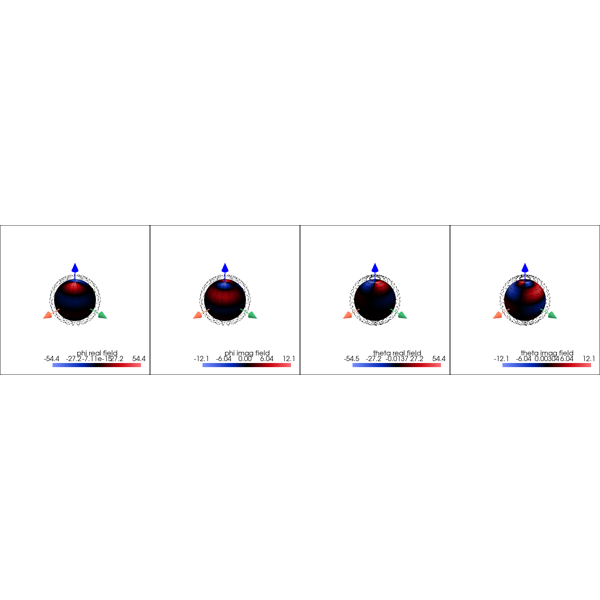
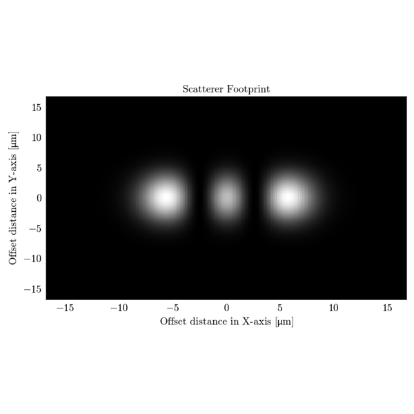
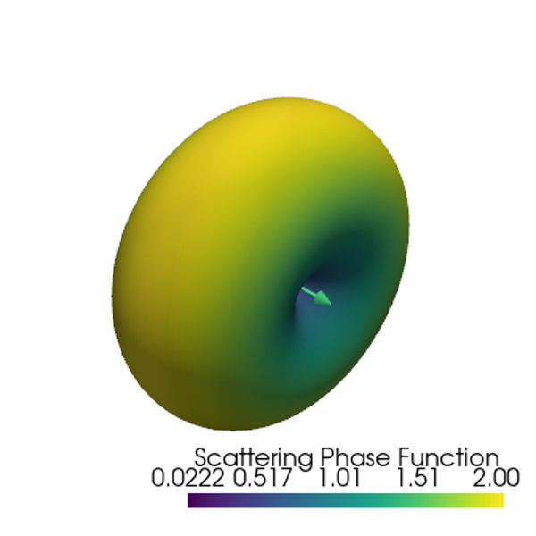
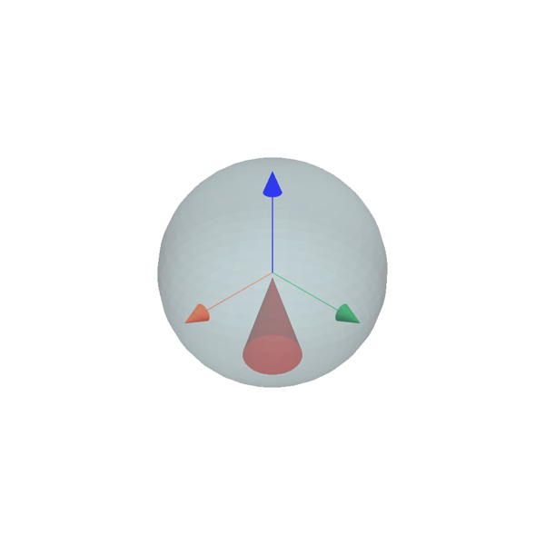
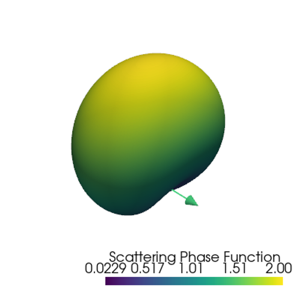
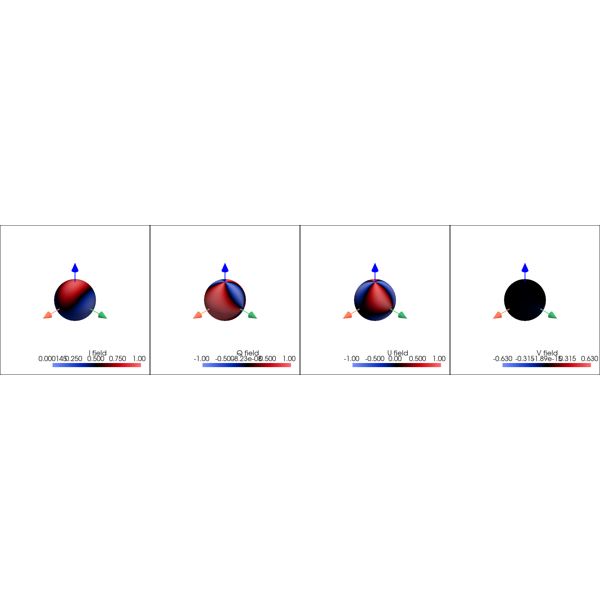

Scatterers#

Far-Fields Computation and Visualization
Far-Fields Computation and Visualization

Scatterer Footprint Calculation and Visualization
Scatterer Footprint Calculation and Visualization
Print properties

S1 S2 Function Computation

Source Plottings

SPF Computation

Stokes Parameters Computation